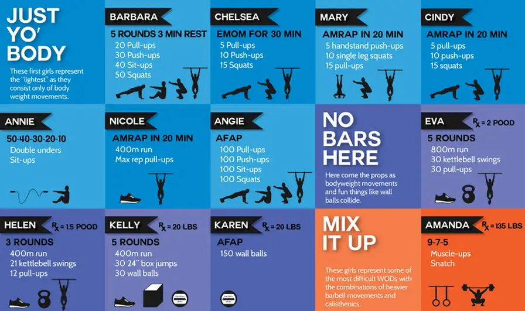

Modalidad de trabajo
En Kingdom Crossfit planificamos nuestras clases buscando que mejores tus habilidades y desarrolles tu potencial, siempre priorizando la técnica antes que la carga.
Al comienzo de la clase realizamos ejercicios de movilidad articular y una entrada en calor basada en el trabajo del día (WOD). Luego, dependiendo de la planificación semanal, realizamos módulos intermedios que pueden ser orientados a trabajar el core (abdominales y espalda baja), la fuerza o la técnica.
Por último, el trabajo del día incluye distintos grupos de ejercicios divididos en: gimnásticos, de acondicionamiento metabólico, de levantamiento de peso, ejercicios en la barra, discos olímpicos y mancuernas.
Entrenamiento del día
Uno de los conceptos más importantes del crossfit es el entrenamiento del día (WOD, workout of the day, por sus siglas en inglés). El WOD consiste en seguir un programa de ejercicios en el que se incluyen flexiones o sentadillas, por ejemplo, en un tiempo determinado y con un número de repeticiones específicas. Lo que diferencia al WOD de otros sistemas de entrenamientos es que, en el encadenamiento de los ejercicios, cada deportista puede integrar sus prácticas personales y seguir sus propios objetivos.
Así, el WOD puede tener entre 1 y 3 grupos de ejercicios dependiendo del área que quieran ejercitar. Los tipos de WOD más utilizados son:
AMRAP: (as many rounds as possible). En este WOD el deportista tiene que realizar el mayor número de rondas posibles de las combinaciones de ejercicios dadas en un determinado tiempo. Por ejemplo: Amrap de 20 minutos. Tiene 20 minutos para hacer todas las rondas posibles.
EMOM: (every minute on a minute). Este entrenamiento busca realizar cierto número de repeticiones de uno o varios ejercicios dentro de un minuto, durante el mayor número de minutos posible. El tiempo que resta desde el fin del ejercicio marcado hasta el fin del minuto es de descanso. El EMOM termina cuando el atleta no puede terminar dentro del minuto o al cabo de los minutos marcados por el entrenador.
Por tiempo: Otro WOD muy frecuente se basa en realizar un número de rondas específicas como meta en un tiempo límite o en ejecutar la combinación de ejercicios que ha proporcionado el entrenador lo más rápido posible.
Tabata: Por último, el Tabata está formado por ocho rondas de dos o tres ejercicios diferentes. En cada ronda hay 20 segundos de ejecución de un ejercicio intenso, seguido de 10 segundos de descanso. En la ronda se cuenta la cantidad de repeticiones totales. Puede ser un Tabata de dos o tres ejercicios diferentes.
El creador del crossfit ha dado nombre a muchos de los WOD que se suelen usar en todo el mundo. Así hay WOD con nombres de mujeres, refiriéndose a los huracanes que han azotado a Estados Unidos, y de hombres, en homenaje a héroes americanos, aunque hay muchos que no tienen nombre y simplemente describen los ejercicios.
Tarifas y horarios
Tarifas
Ofrecemos diferentes opciones adaptadas a las necesidades de cada persona. Cada pack cuenta con una cantidad determinada de clases que pueden ser utilizadas en el horario que más desees durante el mes solicitado.
| Pack de clases | x8 | x12 | x16 | Full pack |
|---|---|---|---|---|
| Precios | $3800 | $4100 | $4300 | $4600 |
Horarios
A continuación, te dejamos los horarios actualizados del box, para que puedas verificarlos las veces que quieras y organizar tu semana de la mejor manera para venir a entrenar!
| Lunes, miércoles y viernes | Martes y jueves | Sabado | |
|---|---|---|---|
| Turno mañana | 09 - 10hs | 09 - 10hs | OPEN BOX 10:30 - 12:30hs |
| 10 - 11hs | 10 - 11hs | ||
| Turno mañana | 17 - 18hs | 17 - 18hs | - |
| 18 - 19hs | 18 - 19hs | ||
| 19 - 20hs | 19 - 20hs | ||
| 20 - 21hs | - |